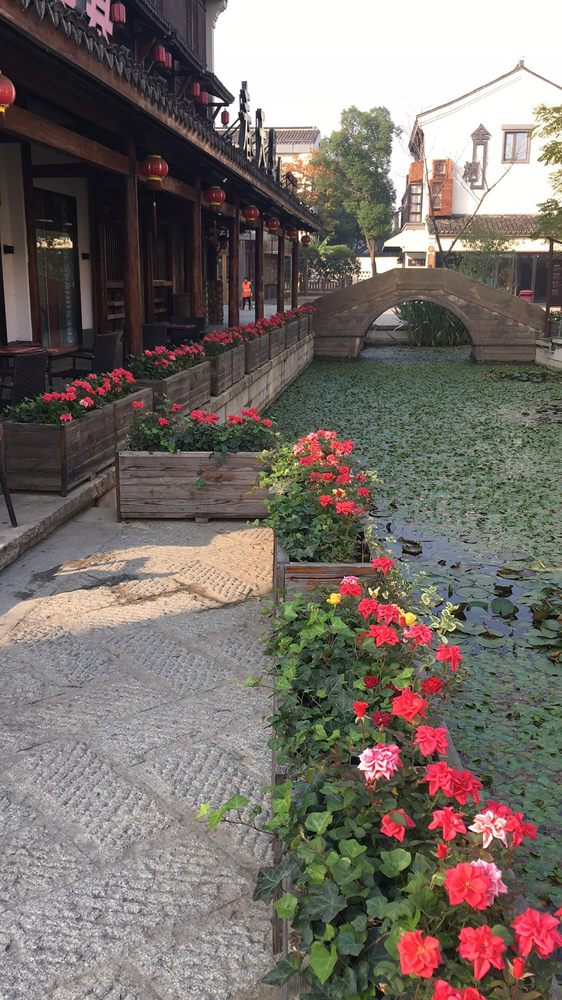

home
plan
about
contact

Hong Kong or Shanghai, which city is better for visiting? These two big regions on the southern coast of China both have interesting places to see, parks, supertall buildings, and shopping malls, and you can have great time in both.
Taking The Steps To Promotion If getting promoted to executive is your goal, take time to examine four factors that will influence your success in breaking through into the executive ranks. Your readiness to take on an executive role depends to a large extent on the facts of your career history, your messaging, your in-person presentation, and perhaps most importantly, the fit with the specific breakthrough opportunity.